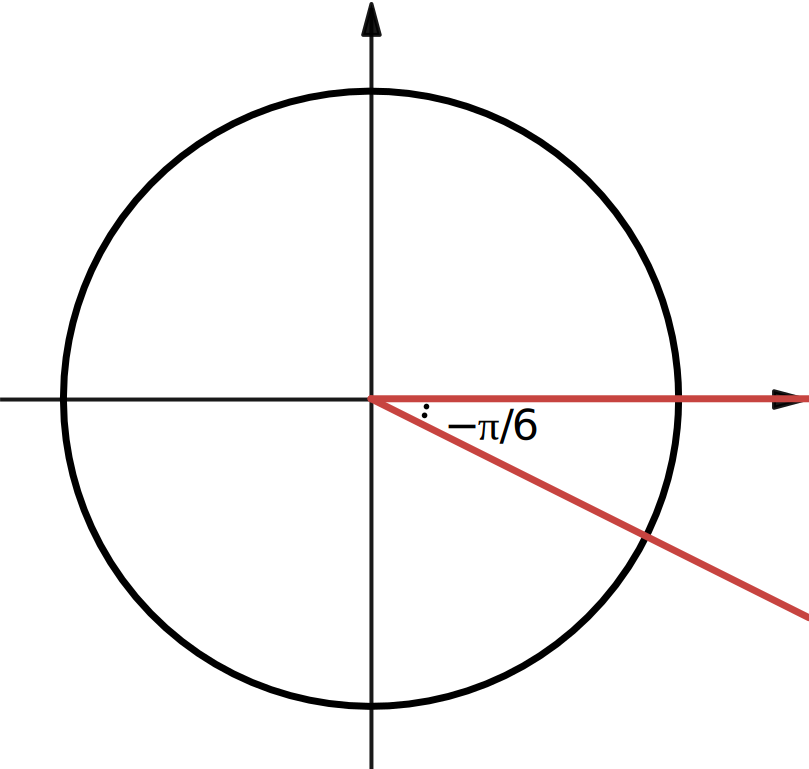

We follow similar steps to the previous example. Start by drawing a coordinate system with a circle, but this time placing the angle
\(\theta= -\frac{\pi}{6} \) in standard position (see
Figure 3.2). Because it is a negative angle, it is in the clockwise direction.

Place the special triangle with
\(\frac{\pi}{6}\) (see
Figure 3.7) in quadrant IV:
Reading from the figure, we see that for the angle \(\theta= -\frac{\pi}{6}\) we can take:
\begin{equation*}
x = \sqrt{3}, y = -1, r = 2.
\end{equation*}
\begin{equation*}
\sin \left(-\frac{\pi}{6}\right) = \frac{y}{r} = -\frac{1}{2}
\end{equation*}
\begin{equation*}
\cos \left(-\frac{\pi}{6}\right) = \frac{x}{r} = - \frac{\sqrt{3}}{2}
\end{equation*}
\begin{equation*}
\sec \left(-\frac{\pi}{6}\right) = \frac{r}{x} = - \frac{2}{\sqrt{3}}
\end{equation*}